Lab 14: ANCOVA
ENVS475: Experimental Analysis and Design
Spring, 2023
Source:vignettes/articles/lab_14_ANCOVA.Rmd
lab_14_ANCOVA.RmdAbout
Here we go for our final linear-model example. It is unique in that it combines a categorical explanatory variable with a continuous explanatory variable. What are we up to? We are combining regression and one-way ANOVA! Yes we are.
ANCOVA
This week, we will be using the lm() function to fit a
linear regression to data which has a continuous AND a
categorical variable. Essentially, we will be fitting two linear
regression models (one for each level of the categorical variable), and
testing whether these lines are different from each other or not.
Hypotheses, plain words
- Is the intercept for the reference level = 0?
- Is there a difference in intercepts between the groups
(Think ANOVA)
- Is there a relationship between the response and continuous
predictor variable regardless of groups? (Think a “global”
linear regression, ignoring/averaging across groups)
- Does the relationship between the response and continous predictor differ between groups? i.e., are the slopes different?
Hypotheses, graphs
## Warning: Using `size` aesthetic for lines was deprecated in ggplot2 3.4.0.
## ℹ Please use `linewidth` instead.
## This warning is displayed once every 8 hours.
## Call `lifecycle::last_lifecycle_warnings()` to see where this warning was
## generated.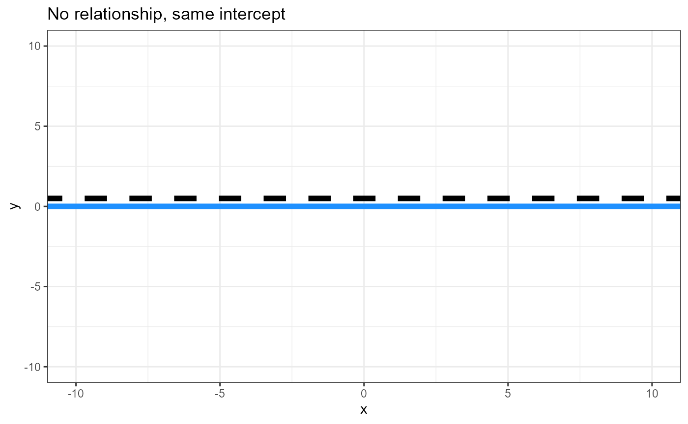
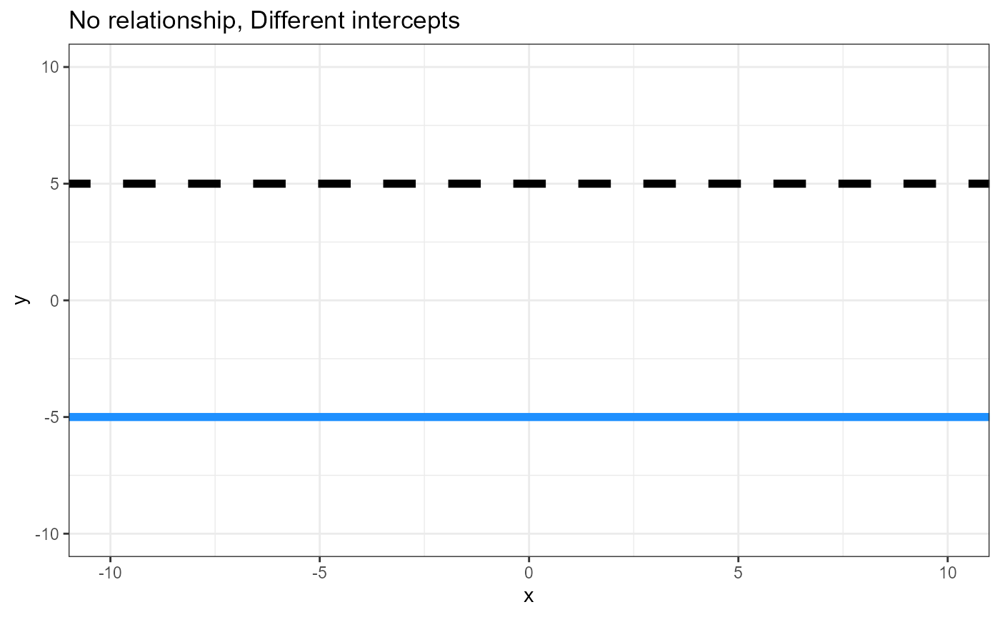
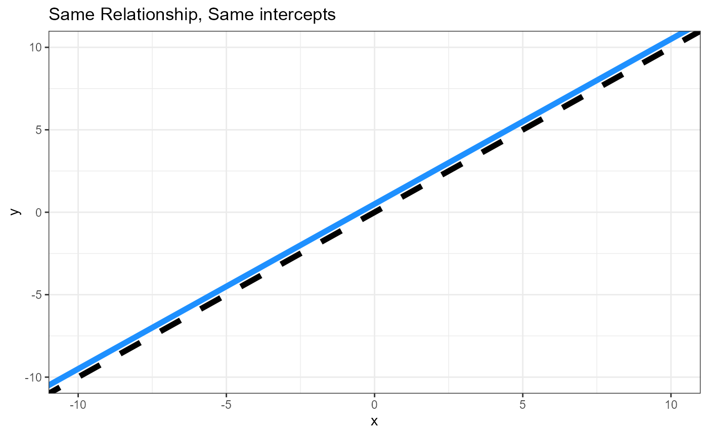
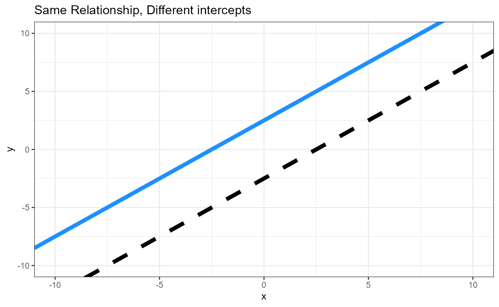
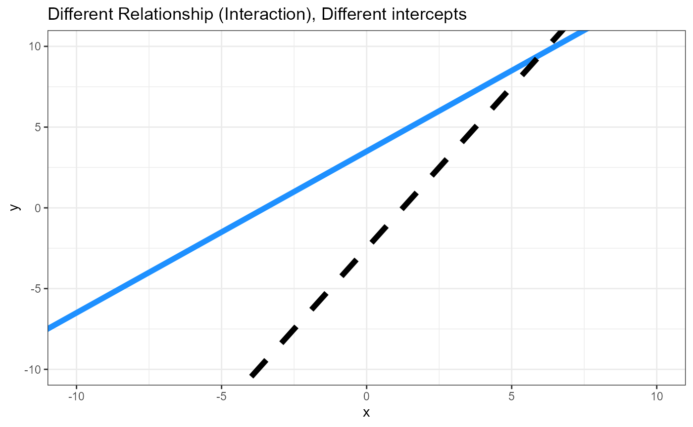
Parameters, two linear equations
Equation for the line of the reference (REF) level
\[\hat{y}_{REF} = \beta_0 + \beta_1*x_1\]
Equation for the line of the alternative (ALT) level
\[\hat{y}_{ALT} = (\beta_0 +\beta_{0\Delta}) + (\beta_1 +\beta_{1\Delta})*x_1\]
\(\Delta\) is the Greek letter Delta, and is commonly used to represent differences
\(\beta_0\) = intercept for reference level
\((\beta_{0\Delta})\) = Difference between intercepts
\(\beta_1\) = Slope for reference level
\((\beta_{1\Delta})\) = Difference between slopes (Interactive effect)
NOTE We are keeping things simple with just two levels of the categorical variable. For each additional level, \(i\), there will be two more parameters estimated in the linear model, one each for the difference in intercepts between the reference level and level \(i\) (\(\beta_{0\Delta_i}\), and one for the difference in slopes between the reference level and level \(i\) (\(\beta_{1\Delta_i}\).
Data
We will be using a data set from the Sleuth3 package
called case1402 . This is data from an experiment examining
the yield of different soybean varieties under different conditions of
Ozone, SO2 and drought. See ?case1402 for more
information.
Load data and rename object
df <- case1402
head(df)## Stress SO2 O3 Forrest William
## 1 Well-watered 0.00 0.02 4376 5561
## 2 Well-watered 0.00 0.05 4544 5947
## 3 Well-watered 0.00 0.07 2806 4273
## 4 Well-watered 0.00 0.08 3339 3470
## 5 Well-watered 0.00 0.10 3320 3080
## 6 Well-watered 0.02 0.02 3747 5092-
William: Response variable, continuous, needs to belog()transformed
-
O3: Predictor variable, continuous
-
Stress: Predictor variable, categorical/factor- Levels:
Stressed,Well-watered
- Levels:
Plot data
Scatterplot with continuous x- and y-variables.
ggplot(df,
aes(x = O3,
y = log_william)) +
geom_point() +
theme_bw()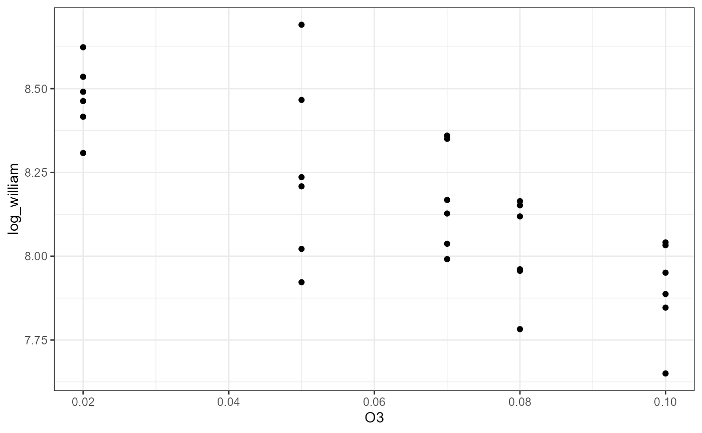
ggplot(df,
aes(x = O3,
y = log_william)) +
geom_point() +
theme_bw() +
geom_smooth(method = "lm")## `geom_smooth()` using formula = 'y ~ x'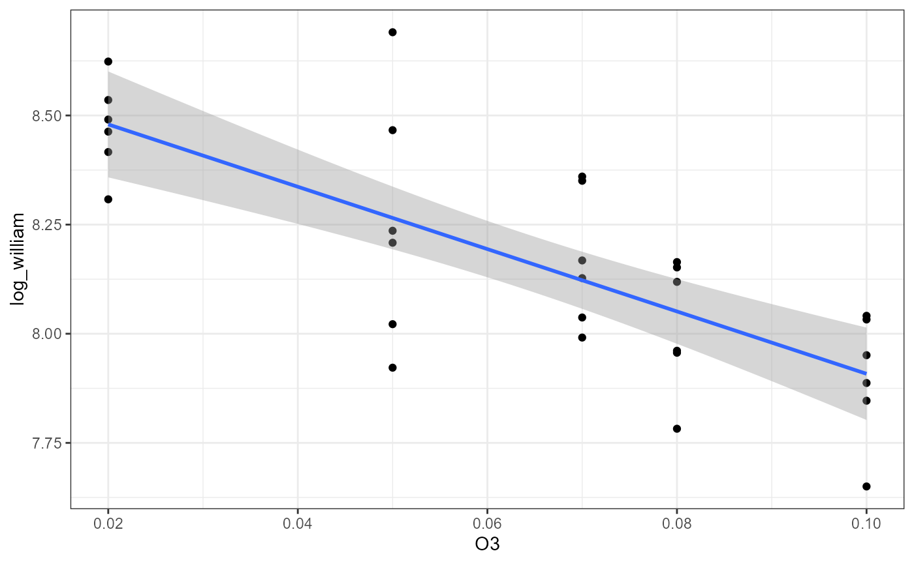 ### Factor
ggplot(df,
aes(y = log_william,
x = Stress,
color = Stress)) +
geom_boxplot() +
geom_point(position = position_jitter(width = 0.1, height = NULL)) +
theme_bw()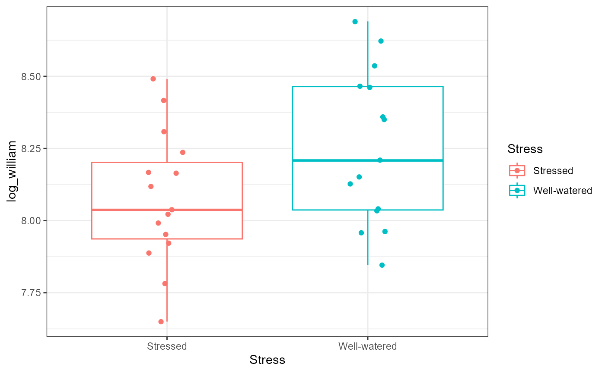
Plot both predictor variables
ggplot(df,
aes(x = O3,
y = log_william,
color = Stress)) +
geom_point() +
theme_bw()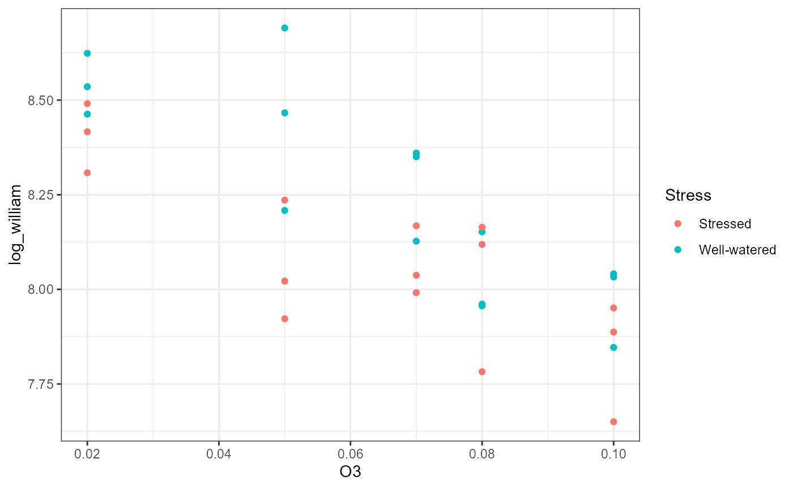
#### With geom_smooth()
ggplot(df,
aes(x = O3,
y = log_william,
color = Stress,
fill = Stress)) +
geom_point() +
theme_bw() +
geom_smooth(method = "lm")## `geom_smooth()` using formula = 'y ~ x'
Fit ANCOVA model
df_lm <- lm(log_william ~ O3 * Stress, data = df)Assumptions
ggplot(df,
aes(sample = log_william)) +
stat_qq() +
stat_qq_line()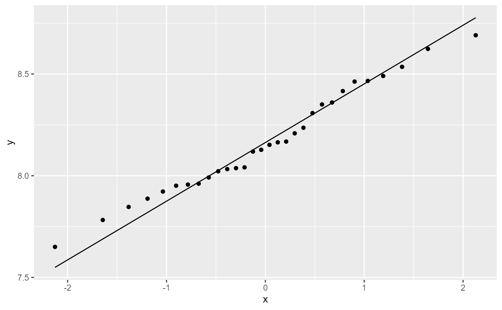
ggplot(df_lm,
aes( x = .fitted,
y = .resid)) +
geom_point()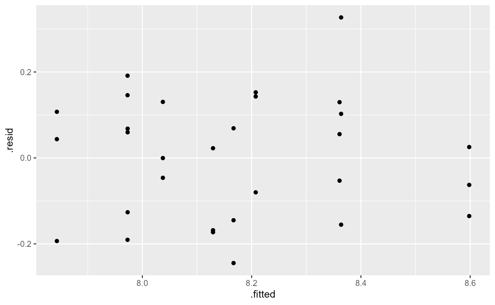
ANOVA table
anova(df_lm)## Analysis of Variance Table
##
## Response: log_william
## Df Sum Sq Mean Sq F value Pr(>F)
## O3 1 1.13812 1.13812 51.9277 1.185e-07 ***
## Stress 1 0.23764 0.23764 10.8426 0.002859 **
## O3:Stress 1 0.01013 0.01013 0.4621 0.502639
## Residuals 26 0.56985 0.02192
## ---
## Signif. codes: 0 '***' 0.001 '**' 0.01 '*' 0.05 '.' 0.1 ' ' 1Interpretation: There is a significant main effect
of O3 (\(F_{1, 26} =
51.92\), \(p < 0.001\)) and a
significant main effect of Stress (\(F_{1, 26} = 10.84\), \(p = 0.002\)). There was no significant
interactive effect (\(F_{1, 26} =
0.46\), \(p = 0.5\)).
Plain words: There was a relationship between yield (
log_william ) and O3 (continuous predictor
variable). Likewise, there was a difference in average yield based on
the Stress factor (categorical predictor variable,
different intercepts for each group). The relationship between yield and
ozone was not dependent on the stress factor, and vice versa (both
groups had the same slope).
Linear model summary
summary(df_lm)##
## Call:
## lm(formula = log_william ~ O3 * Stress, data = df)
##
## Residuals:
## Min 1Q Median 3Q Max
## -0.24461 -0.13302 0.02398 0.10615 0.32690
##
## Coefficients:
## Estimate Std. Error t value Pr(>|t|)
## (Intercept) 8.4902 0.0975 87.083 < 2e-16 ***
## O3 -6.4672 1.4014 -4.615 9.29e-05 ***
## StressWell-watered 0.2642 0.1379 1.916 0.0664 .
## O3:StressWell-watered -1.3473 1.9819 -0.680 0.5026
## ---
## Signif. codes: 0 '***' 0.001 '**' 0.01 '*' 0.05 '.' 0.1 ' ' 1
##
## Residual standard error: 0.148 on 26 degrees of freedom
## Multiple R-squared: 0.7086, Adjusted R-squared: 0.675
## F-statistic: 21.08 on 3 and 26 DF, p-value: 3.899e-07Equation for line 1: Stressed
\[Yield_{Stressed} = \beta_0 + \beta_1 * \text{Ozone} \]
(Intercept) \(\beta_0\): Estimate = 8.49; This is the average yield for the
Stressedtreatment when Ozone = 0.O3\(\beta_1\): Estimate = -6.47; For every 1-unit increase in Ozone, the average yield changes by -6.47.
#### Full equation
\[ \text{Yield}_{Stressed} = 8.49 - 6.47 * \text{Ozone}\]
Equation for line 2: Well-watered
\[Yield_{well-watered} = (\beta_0+\beta_{0 \Delta}) + (\beta_1 +\beta_{1 \Delta}) * \text{Ozone} \]
StressWell-watered: This is the estimated difference (\(\beta_0+\beta_{0 \Delta}\)) in intercepts for the two treatment groups. Estimate = \(\beta_0 + \beta_{well-watered} = 8.49 + 0.2642 = 8.75\); This is the average yield for theWell-wateredtreatment when Ozone = 0.O3:Stresswell-watered: This is the estimated difference (\(\beta_1 +\beta_{1 \Delta}\)) in slopes for the two treatment groups (but note that the p-value > 0.05, so we fail to reject the NULL that this coefficient is 0). Estimate = \(-6.47 - 1.35 = -7.82\).
\[ \text{Yield}_{well-watered} = (8.49 + 0.2642) - (6.47 - 1.35) * \text{Ozone} = 8.75 - 7.82 * \text{Ozone}\]
Note that these equations will be slightly different from what
geom_smooth(method = "lm") will estimate. To see how to
plot the estimated model fits in ggplot, see the appendix
of this lab.
Appendix: Plotting model estimates
- Make a new data frame with values of predictor variables
new_x <- expand.grid(
O3 = seq(from = min(df$O3),
to = max(df$O3),
length.out = 10),
Stress = levels(df$Stress))
head(new_x)## O3 Stress
## 1 0.02000000 Stressed
## 2 0.02888889 Stressed
## 3 0.03777778 Stressed
## 4 0.04666667 Stressed
## 5 0.05555556 Stressed
## 6 0.06444444 Stressed- Predict values of y based on model fit (
df_lm) andnew_x
## fit lwr upr
## 1 8.360886 8.211760 8.510013
## 2 8.303401 8.175325 8.431476
## 3 8.245915 8.136922 8.354908
## 4 8.188429 8.095333 8.281524
## 5 8.130943 8.048691 8.213195
## 6 8.073457 7.994874 8.152041- combine
new_xandnew_yin a data frame to add to the plot
fit_data <- data.frame(new_x,
new_y)
head(fit_data)## O3 Stress fit lwr upr
## 1 0.02000000 Stressed 8.360886 8.211760 8.510013
## 2 0.02888889 Stressed 8.303401 8.175325 8.431476
## 3 0.03777778 Stressed 8.245915 8.136922 8.354908
## 4 0.04666667 Stressed 8.188429 8.095333 8.281524
## 5 0.05555556 Stressed 8.130943 8.048691 8.213195
## 6 0.06444444 Stressed 8.073457 7.994874 8.152041- Plot original data
ggplot(df,
aes(x = O3,
y = log_william,
color = Stress,
fill = Stress)) +
geom_point() +
theme_bw() add a
geom_smooth()layerinstead of using automatic calculations (
method = "lm"), specifyfit_data
ggplot(df,
aes(x = O3,
y = log_william,
color = Stress,
fill = Stress)) +
geom_point(size = 3) +
theme_bw() +
geom_smooth(data = fit_data,
aes(y = fit,
ymin = lwr,
ymax = upr),
stat = "identity")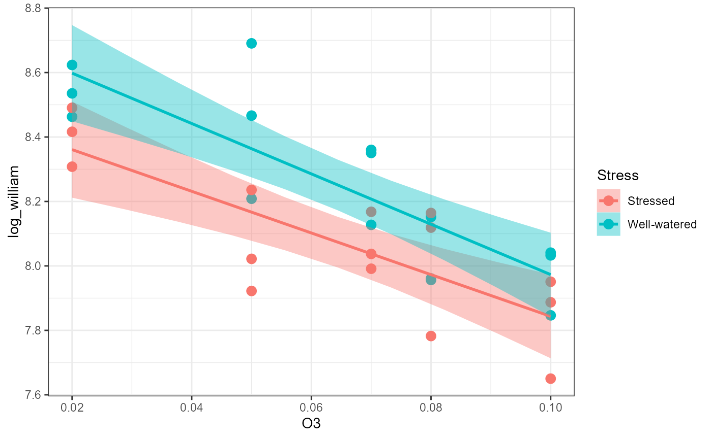